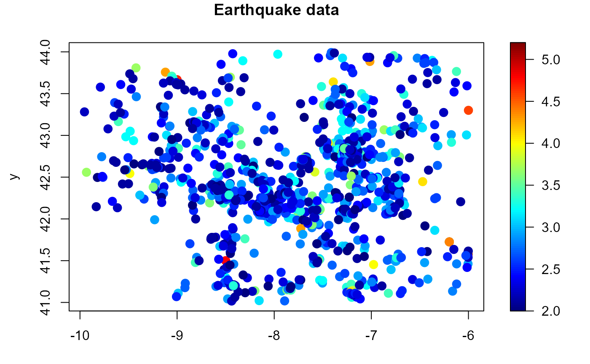

The data set consists of 1859 earthquakes (with magnitude above or equal to 2.0 in Richter's scale), which occurred from 25 November 1944 to 16 October 2013 in the northwest (NW) part of the Iberian Peninsula. The area considered is limited by the coordinates 41N-44N and 6W-10W, which contains the autonomic region of Galicia (Spain) and northern Portugal.
A data frame with 1859 observations on the following 6 variables:
Date and time (POSIXct format).
Time (years since first event).
Longitude.
Latitude.
Depth (km).
Magnitude (Richter's scale).
National Geographic Institute (IGN) of Spain:
https://www.ign.es/web/ign/portal/sis-area-sismicidad.
Francisco-Fernandez M., Quintela-del-Rio A. and Fernandez-Casal R. (2012) Nonparametric methods for spatial regression. An application to seismic events, Environmetrics, 23, 85-93.
str(earthquakes)
#> 'data.frame': 1859 obs. of 6 variables:
#> $ date : POSIXct, format: "1944-11-25 23:52:38" "1948-11-18 03:34:46" ...
#> $ time : num 0 3.98 5.35 16.21 16.21 ...
#> $ lon : num -9 -8.5 -6 -6.2 -6.2 ...
#> $ lat : num 43.7 41.5 43.3 41.7 41.7 ...
#> $ depth: int NA NA NA NA NA NA NA 5 5 NA ...
#> $ mag : num 4.7 4.8 4.6 5.2 5.2 3.9 4.4 4.3 3.2 2.7 ...
summary(earthquakes)
#> date time lon
#> Min. :1944-11-25 23:52:38.00 Min. : 0.00 Min. :-9.954
#> 1st Qu.:1996-04-18 19:10:18.00 1st Qu.:51.39 1st Qu.:-8.127
#> Median :1998-06-18 07:20:29.00 Median :53.56 Median :-7.284
#> Mean :2000-02-10 12:32:54.97 Mean :55.21 Mean :-7.654
#> 3rd Qu.:2005-05-16 21:09:41.00 3rd Qu.:60.47 3rd Qu.:-7.216
#> Max. :2013-10-06 22:27:42.00 Max. :68.86 Max. :-6.000
#>
#> lat depth mag
#> Min. :41.02 Min. : 1.00 Min. :2.000
#> 1st Qu.:42.21 1st Qu.: 6.00 1st Qu.:2.300
#> Median :42.76 Median :11.00 Median :2.600
#> Mean :42.54 Mean :10.61 Mean :2.696
#> 3rd Qu.:42.82 3rd Qu.:13.00 3rd Qu.:3.000
#> Max. :43.99 Max. :80.00 Max. :5.200
#> NA's :414
with(earthquakes, spoints(lon, lat, mag, main = "Earthquake data"))
